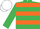
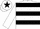
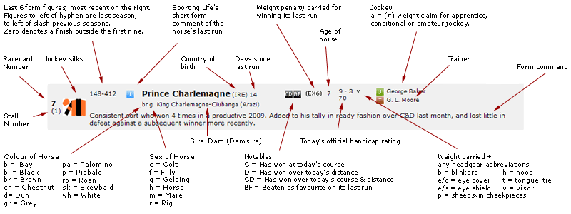

Please enter your username and password to log in to your bookmaker account
| Sign Up Free Bets | |||||||||||||||||||||||||||
| Special Offers | |||||||||||||||||||||||||||
| Best Odds Guaranteed | |||||||||||||||||||||||||||
| 4 | 32 | Coney Island | 15/8 | 13/8 | 7/4 | 7/4 | 7/4 | 7/4 | 7/4 | 7/4 | 15/8 | 2 | 15/8 | 7/4 | 2 | 7/4 | 2 | SP | 13/8 | 7/4 | 15/8 | 2 | 7/4 | 2 | 19/10 | 19/10 | |
| 2 | 0 | Beau Mome | 11/4 | 9/4 | 5/2 | 11/4 | 5/2 | 9/4 | 5/2 | 3 | 11/4 | 5/2 | 9/4 | 5/2 | 5/2 | 5/2 | 5/2 | SP | 9/4 | 5/2 | 5/2 | 5/2 | 9/4 | 5/2 | 13/5 | 12/5 | |
| 1 | 150-12 | Ball Darc | 6 | 5 | 6 | 9/2 | 6 | 4 | 11/2 | 5 | 4 | 5 | 11/2 | 6 | 6 | 11/2 | 5 | SP | 5 | 11/2 | 5 | 5 | 11/2 | 11/2 | 28/5 | 6 | |
| 17 | 2-8213 | Billys Hope | 6 | 7 | 7 | 7 | 7 | 9/2 | 7 | 5 | 5 | 5 | 7 | 6 | 6 | 13/2 | 11/2 | SP | 6 | 13/2 | 6 | 5 | 6 | 13/2 | 9 | 8 | |
| 14 | 63-111 | Tesseract | 8 | 15/2 | 8 | 8 | 8 | 15/2 | 8 | 9 | 8 | 15/2 | 7 | 7 | 8 | 15/2 | 8 | SP | 15/2 | 15/2 | 7 | 15/2 | 15/2 | 8 | 41/5 | 38/5 | |
| 7 | - | Doldrum Bay | 14 | 16 | 16 | 14 | 16 | 12 | 16 | 12 | 12 | 11 | 14 | 12 | 14 | 14 | 14 | SP | 16 | 14 | 14 | 11 | 14 | 14 | 69/5 | 33/2 | |
| 6 | 2- | Dangerous Games | 33 | 22 | 33 | 25 | 33 | 20 | 25 | 20 | 25 | 20 | 33 | 33 | 28 | 25 | 20 | SP | 28 | 25 | 25 | 20 | 28 | 25 | 41 | 42 | |
| 3 | - | Blue Templar | 33 | 33 | 33 | 33 | 33 | 33 | 40 | 33 | 33 | 33 | 40 | 40 | 33 | 33 | 33 | SP | 40 | 33 | 33 | 33 | 33 | 40 | 28 | 39 | |
| 16 | - | Usurp | 33 | 50 | 40 | 33 | 40 | 33 | 33 | 33 | 33 | 33 | 50 | 50 | 33 | 40 | 50 | SP | 50 | 40 | 33 | 33 | 40 | 50 | 43 | 43 | |
| 5 | 4- | Crafty Power | 50 | 66 | 66 | 66 | 66 | 50 | 66 | 50 | 50 | 66 | 66 | 66 | 66 | 66 | 66 | SP | 66 | 66 | 50 | 66 | 66 | 50 | 45 | 75 | |
| 13 | 9-4F7P | Storm In September | 100 | 100 | 100 | 100 | 100 | 100 | 100 | 100 | 100 | 100 | 80 | 100 | 100 | 100 | 100 | SP | 80 | 100 | 100 | 100 | 100 | 100 | 23/5 | 146 | |
| 15 | 00 | Thats A Wrap | 100 | 100 | 100 | 100 | 100 | 100 | 100 | 100 | 100 | 100 | 100 | 100 | 100 | 100 | 100 | SP | 80 | 100 | 100 | 100 | 100 | 100 | 26/5 | 143 | |
| 9 | - | Jetantas | 100 | 100 | 100 | 100 | 100 | 100 | 100 | 100 | 100 | 100 | 100 | 100 | 100 | 100 | 100 | SP | 80 | 100 | 100 | 100 | 100 | 100 | 52/5 | 146 | |
| 18 | - | Sweet Cherry | 100 | 80 | 100 | 100 | 100 | 100 | 100 | 100 | 80 | 100 | 80 | 100 | 100 | 100 | 100 | SP | 80 | 100 | 100 | 100 | 100 | 100 | 52/5 | 67 | |
| 8 | 377-90 | Improver | 100 | 100 | 100 | 100 | 100 | 100 | 100 | 100 | 100 | 9 | 100 | 100 | 100 | 100 | 100 | SP | 80 | 100 | 100 | 9 | 100 | 100 | 21 | 154 | |
| 12 | 0-4 | Phar Island | 66 | 66 | 66 | 66 | 66 | 50 | 100 | 50 | 80 | 66 | 80 | 100 | 66 | 66 | 66 | SP | 80 | 66 | 50 | 66 | 66 | 66 | 47 | 71 | |
| 10 | - | Jocular | 40 | 125 | 40 | 50 | 40 | 33 | 66 | 50 | 33 | 33 | 125 | 50 | 50 | 66 | 50 | SP | 80 | 66 | 33 | 33 | 66 | 40 | 39 | 86 | |
| 11 | - | Mustadaam (N/R) | 100 | 100 | 100 | 100 | 100 | 100 | 100 | 52/5 | 150 | ||||||||||||||||
| 3 1/5 | 3 1/5 | 3 1/5 | 3 1/5 | 3 1/5 | 3 1/5 | 3 1/5 | 3 1/5 | 3 1/5 | 3 1/5 | 3 1/5 | 3 1/5 | 3 1/5 | 3 1/5 | 3 1/5 | 3 1/5 | 3 1/5 | 3 1/5 | 3 1/5 | 3 1/5 | 3 1/5 | |||||||
Leopardstown 12:15 Racecard and Betting Preview
Sporting Life Preview
Tesseract has completed a hat-trick of bumper victories though on ground much quicker than he'll face here. He's also up against some nice prospects but is a promising type himself and a big run is expected. Ball D'arc easily landed a Thurles bumper before being outpaced by Moon Over Germany at Navan. Time may tell he had a difficult task and he's an obvious threat to all. Billy's Hope landed a Punchestown bumper before finding Listed company too hot at Navan so this can go to CONEY ISLAND. Eddie Harty's charge followed a promising debut at Naas with a cracking effort in what looked a very strong maiden won by Woodland Opera at Navan and can go one better. Beau Mome joined Willie Mullins after landing a minor bumper in France and started odds-on for his hurdling debut at Punchestown but was beaten a distance.
Oddschecker Verdict
CONEY ISLAND was only just touched off at Navan on his second outing and was closely matched with subsequent winner Marakoushi on his debut. He shades the vote over Ball D'arc, who showed some signs of keenness when defeated earlier this month, but might settle more effectively in a first-time hood. It would be dangerous to write off Beau Mome after a disappointing Irish debut and Tesseract can give a good account if fully wound up for his return.
Prediction: 1st Coney Island, 2nd Ball Darc, 3rd Beau Mome
Prediction: 1st Coney Island, 2nd Ball Darc, 3rd Beau Mome
Horse DetailsHelp

1
Successful in a NH flat race and a point-to-point at 2m and 3m on yielding ground. Beaten 5l by Moon Over Germany when second of 15 at 4-6fav on his hurdling debut at Navan over 2m (heavy) earlier this month.
2
3
Half-brother to Asian Maze, won nine times over hurdles between 2m 2f and 3m including four Group 1 races.
4
Placed in two hurdle races from two starts. Beaten 3/4l by Woodland Opera when second of 22 at 4-1 on his latest outing in a maiden hurdle race at Navan over 2m (soft) last month.
5
Finished 13l behind Vinciaettis when last of 4 at 3-1 on his racecourse debut at Limerick over 2m (heavy) in March.
6
Dam unraced. Beaten 2 1/2l by Petit Mouchoir when second of 6 at 7-2fav on his racecourse debut at Kirkistown over 3m in February. Having his first run for a new stable today, previously with Sean Thomas Doyle in Ireland.
7
Full brother to Weapon's Amnesty, won three times over hurdles at 2m 6f and 3m and twice in chases at 3m including two Group 1 races.
8
9
Dam unraced.
10
A winner at 20-1 at Curragh over 1m 4f (good to firm) on his latest outing in June, beating On A Pedestal by 1/2l. Having his first run for a new stable today, previously with John Patrick Murtagh in Ireland.
11
Well beaten at 8-1 behind Smiling Stranger when last of 8 on his latest outing at Bath over 1m 2f (good to firm) in August. Having his first run for a new stable today, previously with Simon Crisford.
12
Unplaced in both NH starts. Finished 8l behind Tesseract when fourth of 8 at 20-1 on his latest outing in a NH flat race at Tipperary over 2m (yielding) in June.
13
Yet to place in four starts. Pulled up when 4-1fav at Borris House over 3m in a point-to-point race won by Farm The Rock earlier this month on his latest outing.
14
He has won three NH flat races from 2m to 2m 1f on ground varying from good to firm to yielding. Won on his latest outing in a NH flat race when 1-5fav at Tipperary over 2m (good) in July, beating Fu's Island by 1 1/4l.
15
Unplaced in both starts over hurdles. Well beaten at 100-1 behind Tombstone when 15th of 19 on his latest outing in a maiden hurdle race at Fairyhouse over 2m 2f (soft - heavy) last month.
16
Dam unraced.
17
A winner of a NH flat race at 2m on soft ground. Third of 15 behind Augusta Kate beaten 14l at 11-2 on her latest outing in a NH flat race at Navan over 2m (soft) last month.
18
Beaten 6l behind Daliyan at 8-1 when 9th of 13 on her latest outing at Dundalk over 1m 3f in October.
Forecast Prices: Coney Island 5/2, Beau Mome 7/1, Ball Darc 4/1, Billys Hope 3/1, Tesseract 5/1, Doldrum Bay 10/1, Dangerous Games 16/1, Blue Templar 33/1, Usurp 50/1, Crafty Power 25/1, Storm In September 100/1, Thats A Wrap 100/1, Jetantas 66/1, Sweet Cherry 66/1, Improver 66/1, Phar Island 16/1, Jocular 25/1, Mustadaam 33/1
Last Year's Race: Alvisio Ville, 4, 11 7, P Townend, 1/2, W P Mullins, 12 ran
Most Popular Bets